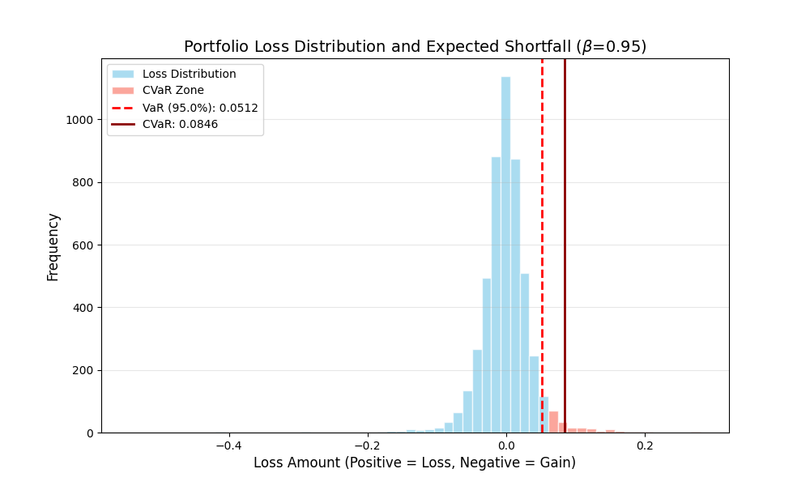
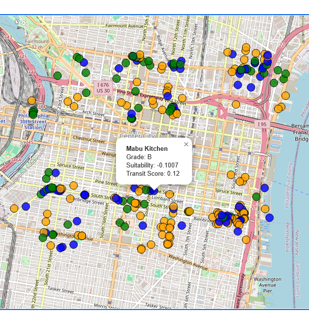
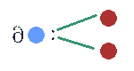

I am a Physics Master’s graduate (CSE concentration) focused on decomposing complex systems using first-principles mathematics. My work bridges the gap between theoretical physics and production-ready AI solutions.

A reproduction of the Rockafellar & Uryasev framework for simultaneous VaR/CVaR minimization. This implementation replaces standard Gaussian assumptions with Multivariate Student-T distributions to model the "fat-tail" risk inherent in volatile markets.

Leveraging the research methodology I honed in the Sharma Group, I independently parsed current software engineering literature to identify and implement the 11-stage pipeline taxonomy defined in Biswas et al. (ICSE '22). This project demonstrates my ability to bridge the gap between high-impact academic research and production-ready GIS engineering.
The Normalized Suitability Equation:
$$S = 0.7T - 0.3C$$
Where T (Transit) models kinetic foot traffic flow and C (Competition) represents market resistance.
Biswas et al. 11-Stage Data Science Pipeline:
[ACQ] Ingest → [PRP] Prep → [STR] SQLite → [FTA] Feature Analysis → [TRS] Norm → [SLT] Select → [MDL] Model → [EVL] Eval → [INT] Grade → [CMN] Publish → [DPL] Deploy.

Developed in the Sharma Group at CU Boulder, this project implements an adaptive state space that iteratively expands the Hilbert Space to solve for complex modes (eigenvectors) in strong light-matter coupling scenarios. By utilizing a full Quantum Electrodynamics (QED) treatment, the algorithm identifies critical system dynamics with high precision.
I am dedicated to making complex scientific concepts accessible through inquiry-based instruction and intentional mentorship.
At Los Alamos National Laboratory, I engineered a high-performance modeling framework that achieved a 9.5x speedup in pattern detection by optimizing the VF2 subgraph isomorphism algorithm. My workflow emphasizes high-performance C++ (Boost) and Python integration.
Technical Note: I actively integrate modern AI-driven development tools, such as Claude Code, to accelerate the transition from mathematical theory to production-ready code, ensuring rigorous testing and optimized numerical performance.
As a Business Automation Specialist at Best Companies Group, I developed custom VBA solutions and Excel macros to automate large-scale data operations, significantly reducing manual error rates. Previously, at Discovery Lab Global, I designed an R Studio pipeline to clean and analyze over 500,000 data points, translating complex sentiment data into predictive geographic heat maps.
In my role as a Graduate Research Assistant at the University of Colorado (Sharma Research Group), I developed numerical methods for many-body systems. My professional background is rounded out by extensive experience in technical lecturing and curriculum design, specifically focusing on bridging the gap between introductory STEM education and professional computational practice.